Gallery
 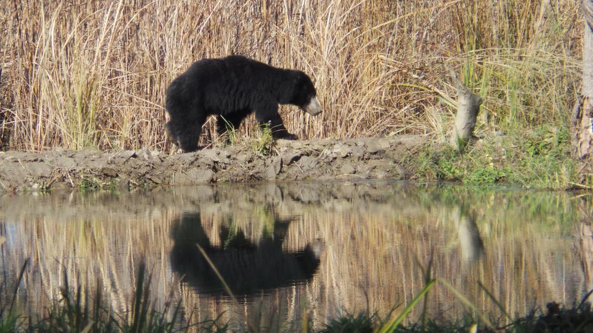
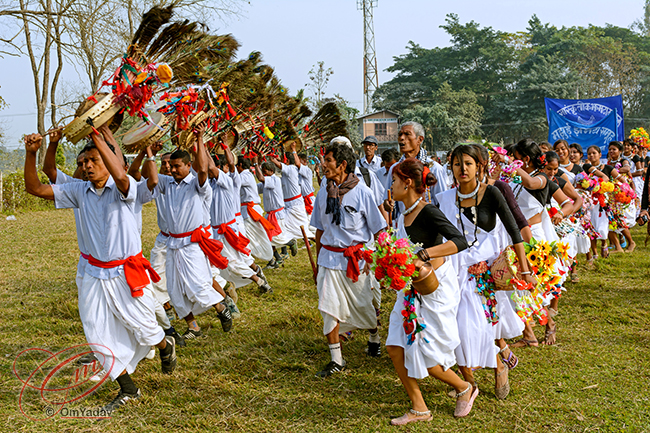
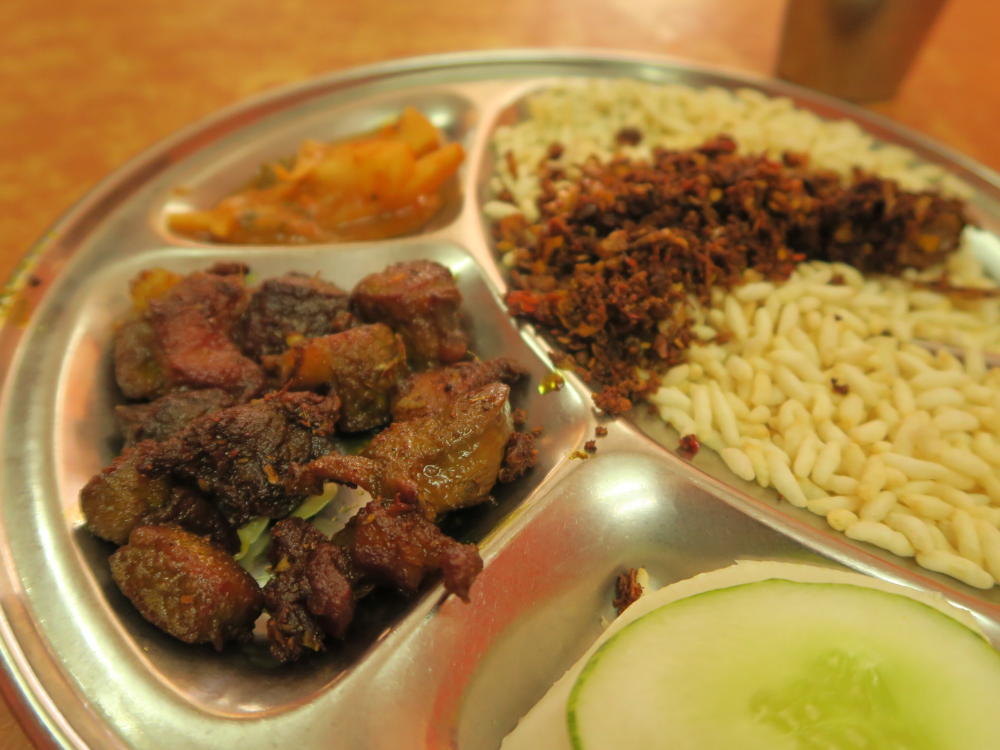
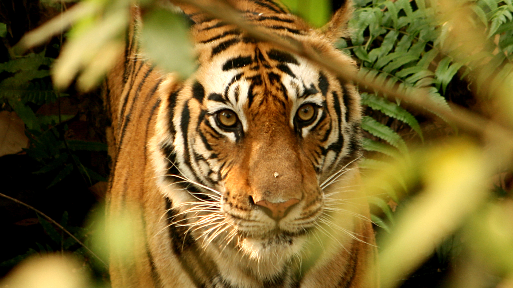
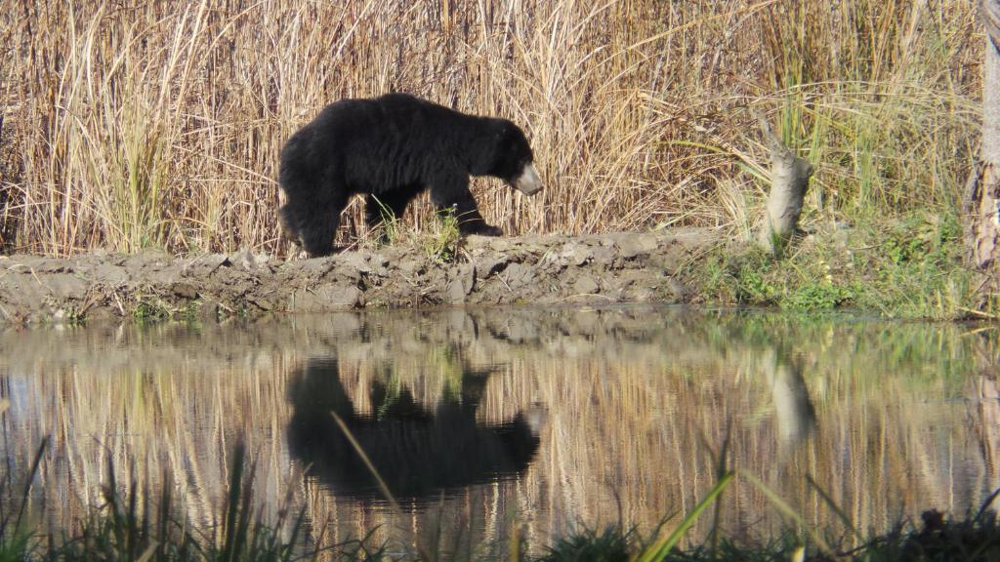
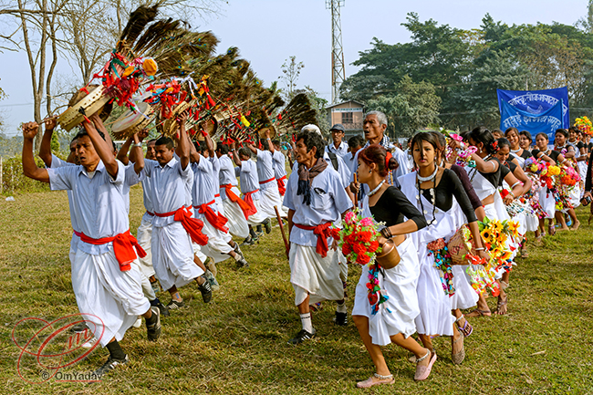
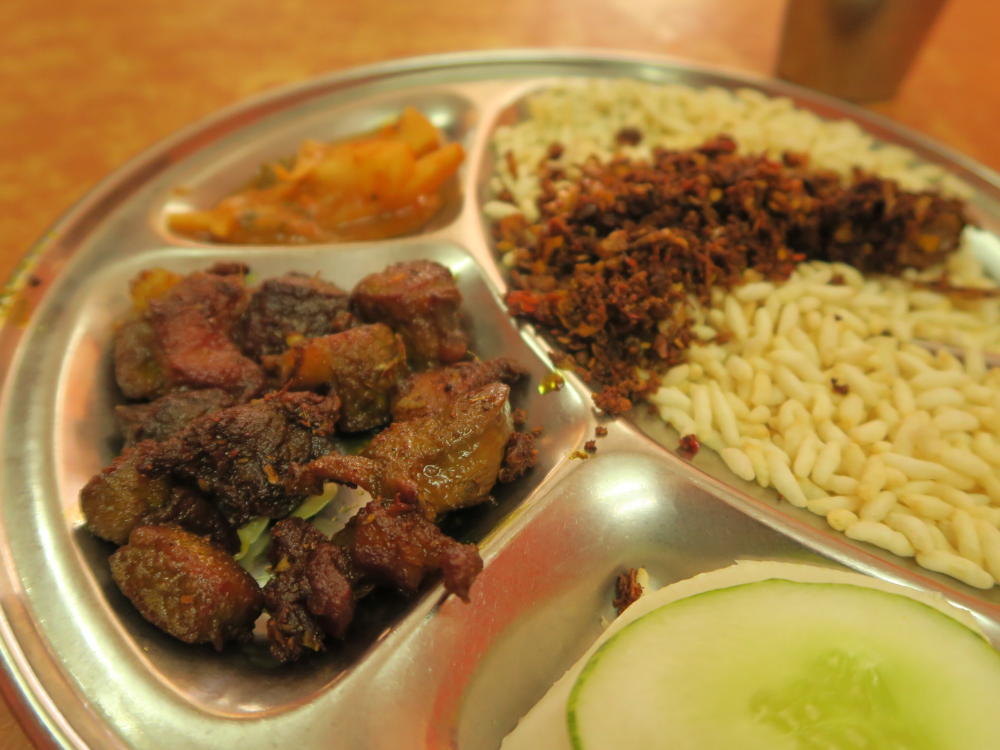
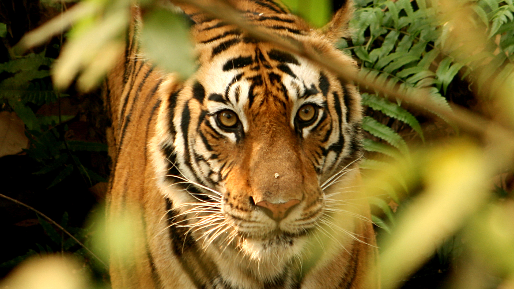
Chitwan literally means “heart of the jungle”. The popular Inner Terai valley gets its name from Chitrasen, the Tharu King, who once ruled here. In the southwest corner of Bagmati Province, Chitwan lies between foothills of the Himalaya, the Mahabharat and Siwalik ranges. The region called Chitra Ban in earlier references used to be dense forest abounding in wild animals and resorted by recluse sages meditating deep in the forests.
In recent years Chitwan National Park tops the list of things to do in Asia. It is an exciting jungle experience with - jungle safaris, birdwatching, canoe rides and numerous other nature and jungle activities. While the jungles are teeming with wild animals like tigers, leopards and rhinos, along the marshes and rivers are gharial and marsh mugger crocodiles basking in the sun.
Chitwan is one of the most popular places in Nepal and the nearest to Kathmandu for wildlife experience. Chitwan National Park home to more than 50 mammal species, over 525 birds, and 55 amphibians and reptiles includes endangered fauna species.The swampy areas and numerous oxbow lakes of Chitwan provide home for the marsh mugger crocodiles.
With lush jungles and numerous rivers flowing through the region, Chitwan National Park and the surrounding areas are great for birdwatching. The region is home to 525 species of birds that include summer migrant birds like paradise flycatcher, Indian pitta and parakeets etc. during summer, while winter birds include waterfowl, Brahminy cormorants and migratory birds from Siberia.
In terms of gastronomy, Chitwan offers taste from international, continental cuisine to different local and indigenous specialties. While international cuisine options are available in all top hotels and resorts, local taste can be had with a little sojourn of roadside restaurants and eateries. Nepali Terai-style set and Tharu-style set are popular options.
Tharu language has been greatly influ¬enced by various Indo-Aryan languages such as Maithili in the eastern, Bhojpuri in the central, and Awadhi in western Terai.Traditional Tharu religion consists of the worship of spirits, particularly of the forest. The family deity is located in the eastern corner of the house, where also sleeps the senior most family member.
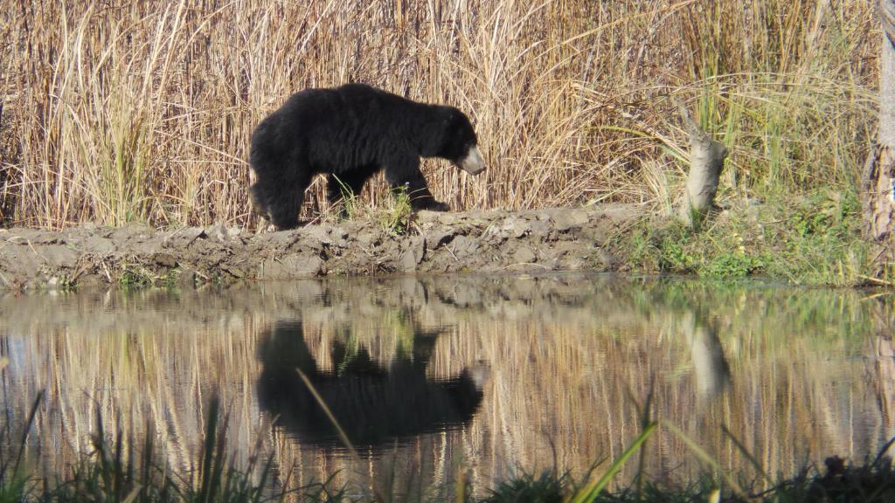
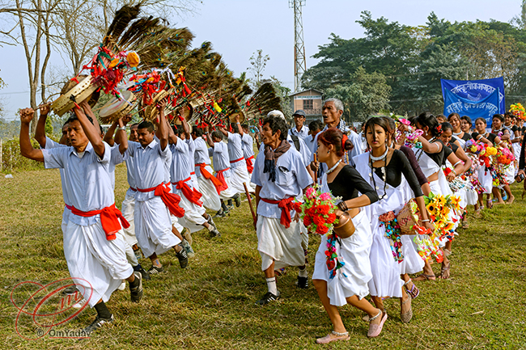
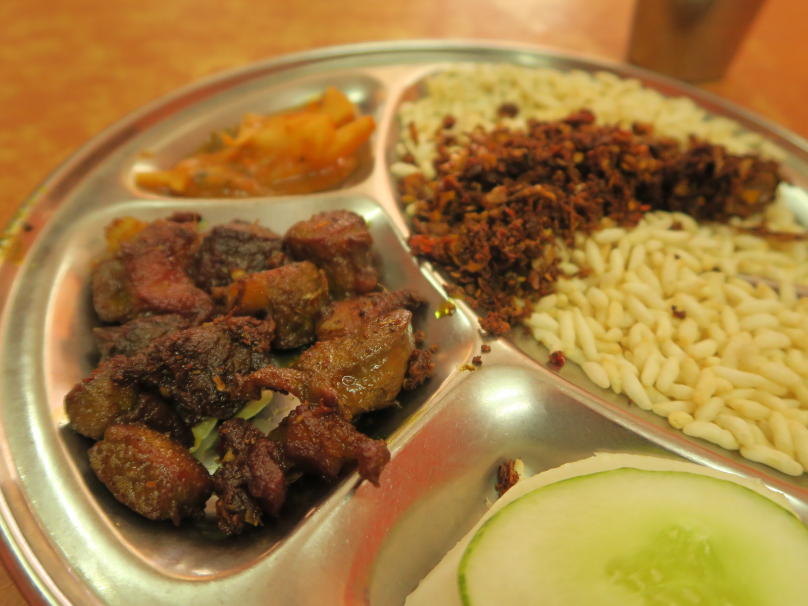
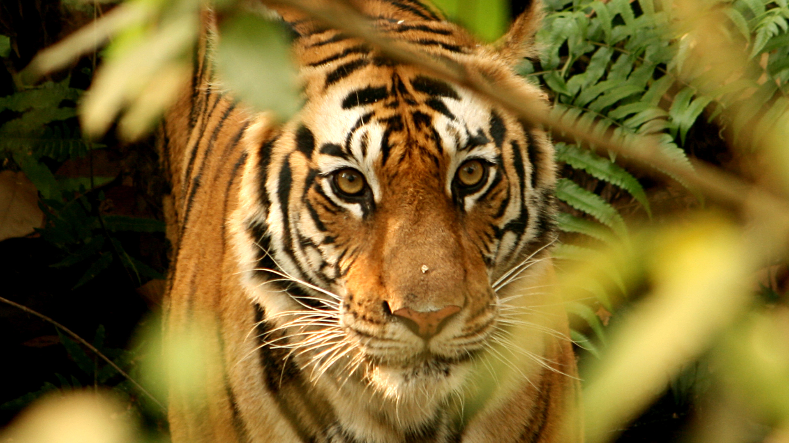